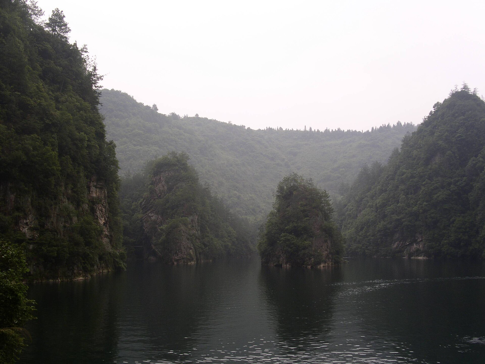
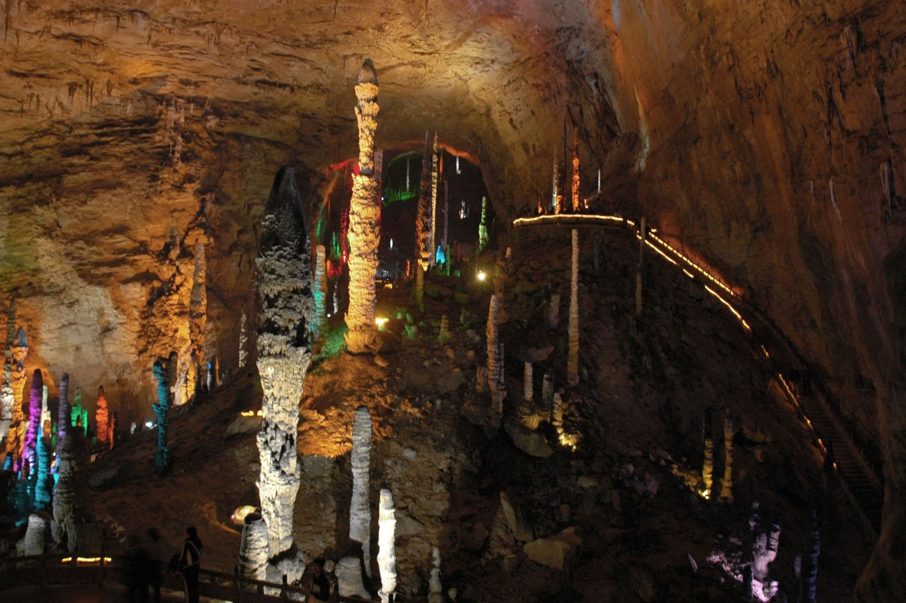
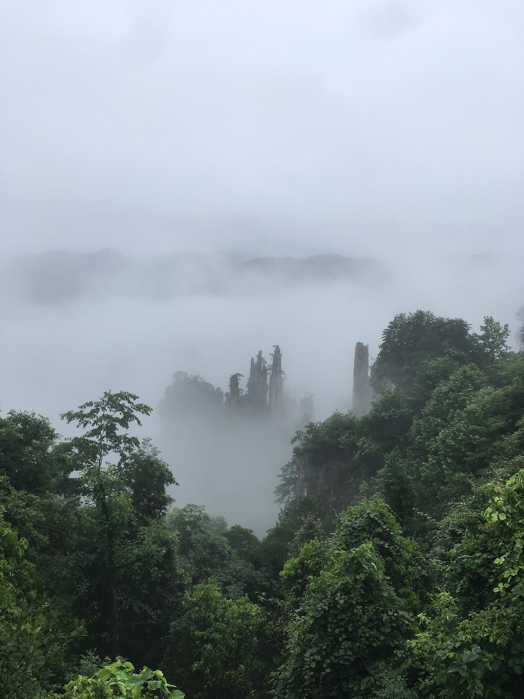

Озеро Баофэн
Лодка 1,5–2 часа, до 17:00. Такси 10–15 мин. +96–120 ¥ сверху сметы дня.
Конец октября 2026 · соло · поезда, без перелётов
Чжанцзяцзе — столбы из «Аватара». Яншо — река с купюры. Улинъюань не другой город: район у ворот того же парка.
10 км в горный день. Первый класс на двух длинных поездах. ~10 800 ¥.
Один маршрут
Рельеф. От Яншо до Гуанчжоу около двух часов. Из Чжанцзяцзе было бы семь.
Обратная дорога из Яншо короткая, около двух часов. Если начать с реки, неделя кончится семью часами в кресле. Поэтому горы первые. Тридцатого днём уже поезд: тридцать первого ярмарка открывается с утра, и вы не с перрона.
День 1 · 24 октября · природа 0 ч
Утром проводите сотрудника в Байюне. Потом Южный Гуанчжоу, вечером Западный Чжанцзяцзе. Пять с половиной часов, иногда семь, место в первом классе, как в «Сапсане». К парку вы подойдёте уже к ночи, и это хорошо. После проводов и такого сидения там всё равно нечего успеть.
день ~1 950 ¥
День 2 · 25 октября · 7–8 ч на природе · ~10 км
Утром лифт Байлун поднимает внутрь горы. Дальше Юаньцзяцзе, «Первый мост под небом», автобус на Тяньцзы, вниз канаткой. Между площадками ходите сами: это и есть десять километров. Пешком наверх вместо лифта не идём, там двадцать километров ступеней.
день ~1 290 ¥
День 3 · 26 октября · 6–7 ч · ~10 км
Тропа «Золотой кнут», семь с половиной километров в одну сторону, назад экоавтобус. Второй район сегодня не добавляем: иначе будет пятнадцать–восемнадцать километров, а вам хватает десяти.
день ~930 ¥ · без озера и игл
Если тропа кончилась рано

Лодка 1,5–2 часа, до 17:00. Такси 10–15 мин. +96–120 ¥ сверху сметы дня.

Полдня. Не вместо столбов. Не вместе с Янцзяцзе.

К 15:00 больница Улинъюань, иглы. Вечером массаж ног на улице Улин: вывеска 足疗, «цзуляо». Не оба впритык к горам.
День 4 · 27 октября · 7–8 ч · 10–12 км
Небесные врата, Тяньмэнь: сквозное отверстие 131 метр. Снизу 999 ступеней, эскалатор есть. Потом тропа Гуйгу — доски в обрыве — и стекло вдоль скалы. Картинка, где человек в поясе ползёт боком, это Хуашань, другая провинция.
день ~1 240 ¥
День 5 · 28 октября · 1,5–2 ч вечером
Утром Чжанцзяцзе, вечером Гуйлинь: около семи часов, снова первый класс. Оттуда короткий поезд до Яншо. Ночуете не на Западной улице, а в посёлке Синпин, у самой купюры. Если свет ещё есть, закат с холма Лаочжай.
день ~2 390 ¥
День 6 · 29 октября · 6–8 ч · 5–8 км
Утром смотровая с двадцати юаней, та самая картинка. Потом короткий плот по реке Ли. Днём река Юйлун: вас несут водой, не автобусом по вершине, рядом можно взять велосипед. Западную улицу Яншо оставляем туристам.
день ~2 270 ¥
День 7 · 30 октября · поезд после обеда
Утром Синпин можно не спеша: старый посёлок или повтор холма. После обеда поезд около двух часов, Южный Гуанчжоу. На Пачжоу сегодня не идти: между фазами зал закрыт. Тридцать первого третья фаза откроется уже с утра, и вы будете выспаны.
день ~720 ¥ · без ночёвки · ярмарка завтра
Где спать
Смета соло · курс 12,92 ₽/¥ · 4.09.2026
Номер целиком. Плот на Юйлун целиком. Без шопинга, массажа и озера — они сверху, если возьмёте.
| День | Поезд | Ночь | Еда | Парк / плот | Такси | Итого |
|---|---|---|---|---|---|---|
| 1 · дорога | 900 | 650 | 220 | — | 180 | 1 950 |
| 2 · столбы | — | 650 | 220 | 380 | 40 | 1 290 |
| 3 · ручей | — | 650 | 220 | — | 60 | 930 |
| 4 · Тяньмэнь | — | 550 | 220 | 288 | 180 | 1 238 |
| 5 · в Яншо | 590 | 1 300 | 220 | — | 280 | 2 390 |
| 6 · река | — | 1 300 | 220 | 532 | 220 | 2 272 |
| 7 · домой | 260 | — | 220 | — | 240 | 720 |
| Неделя | 1 750 | 5 100 | 1 540 | 1 200 | 1 200 | ~10 790 |
Цифры округлены, чтобы сойтись со сметой недели. Билеты на поезд скачут. Озеро, шоу, массаж, иглы — не внутри этих сумм.
Это не забыли
Неделя уже занята: два поезда, три горных дня под потолок 10–12 км, один речной. Тридцатого днём уже поезд. Ниже — что можно добавить только если выкинуть что-то из плана или появится восьмой день.
Та фотография, где человек в поясе пристёгнут к тросу и боком идёт по узкой доске без перил, снята на Хуашане, провинция Шэньси, рядом с Сианем. От Гуанчжоу это другой конец страны, только самолётом или ночью в поезде. В Чжанцзяцзе этого аттракциона нет. Ближний «парк со страховкой», Шинючжай, стоит у Чанша: данься, стеклянный мост, 50 метров досок в поясе. Пейзаж не «Аватар», ехать полдня. Ваша тропа здесь — Гуйгу на Тяньмэнь, 27-го.
Полдня плюс 40 минут от парка. Дни 2–4 уже под потолок ходьбы. Вшить его — значит выкинуть ручей или Тяньмэнь, либо приехать разбитым. Если будет 8-й день — его. Стекло на Тяньмэнь другое: там настил вдоль скалы, не мост над пропастью.
Можно. Тогда финиш — семь часов в кресле из Чжанцзяцзе. Мы развернули маршрут, чтобы последний поезд был два часа. Это выбор порядка, не нехватка времени.
Нужен целый день: 2–3 часа в каждую сторону из Синпина плюс ступени. Чтобы вставить, придётся выкинуть Тяньмэнь или реку. На семь дней с двумя поездами не успеваем.
Другие ландшафты и ещё поезда. Это уже другая поездка, не «добавка к субботе». Не успеваем и не пытались втиснуть.
Успеть можно только ногами. Будет 15–18 км. Потолок 15. Узкая тропа по ребру и так будет на Тяньмэнь на следующий день.
Успеваем: вечер дня 2 или 3, 80 минут, +158–198 ¥. Не включил в обязательное, потому что это зал, не горы. Если захотите вечер не на улице — берите.
После километров
Зашли на час. На вывеске 足疗, «цзуляо», foot massage. 80–180 юаней. Не в смете недели.
С улицы, без записи. Паспорт, окошко 挂号 «гуахао» (регистратура), слово 针灸 «чжэньцзю» (acupuncture). Час–полтора. После 17:00 отделение закрыто. Не в смете недели, около 60–180 юаней.
Октябрь ещё впереди
Фото — Wikimedia Commons. План текстом лежит в той же папке. Стрелка вверх вернёт к туману.